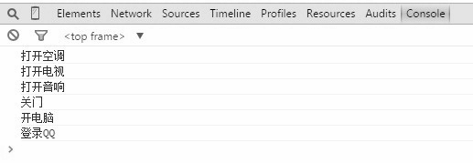

目前的万能遥控器，包含了关门、开电脑、登录QQ这3个命令。现在我们需要一个“超级万能遥控器”，可以控制家里所有的电器，这个遥控器拥有以下功能：
打开空调
打开电视和音响
关门、开电脑、登录QQ
首先在节点中放置一个按钮button来表示这个超级万能遥控器，超级万能遥控器上安装了一个宏命令，当执行这个宏命令时，会依次遍历执行它所包含的子命令，代码如下：
<html>
<body>
<button id="button">按我</button>
</body>
<script>
var MacroCommand = function(){
return {
commandsList: [],
add: function( command ){
this.commandsList.push( command );
},
execute: function(){
for ( var i = 0, command; command = this.commandsList[ i++ ]; ){
command.execute();
}
}
}
};
var openAcCommand = {
execute: function(){
console.log( '打开空调' );
}
};
/**********家里的电视和音响是连接在一起的，所以可以用一个宏命令来组合打开电视和打开音响的命令*********/
var openTvCommand = {
execute: function(){
console.log( '打开电视' );
}
};
var openSoundCommand = {
execute: function(){
console.log( '打开音响' );
}
};
var macroCommand1 = MacroCommand();
macroCommand1.add( openTvCommand );
macroCommand1.add( openSoundCommand );
/*********关门、打开电脑和打登录QQ的命令****************/
var closeDoorCommand = {
execute: function(){
console.log( '关门' );
}
};
var openPcCommand = {
execute: function(){
console.log( '开电脑' );
}
};
var openQQCommand = {
execute: function(){
console.log( '登录QQ' );
}
};
var macroCommand2 = MacroCommand();
macroCommand2.add( closeDoorCommand );
macroCommand2.add( openPcCommand );
macroCommand2.add( openQQCommand );
/*********现在把所有的命令组合成一个“超级命令”**********/
var macroCommand = MacroCommand();
macroCommand.add( openAcCommand );
macroCommand.add( macroCommand1 );
macroCommand.add( macroCommand2 );
/*********最后给遥控器绑定“超级命令”**********/
var setCommand = (function( command ){
document.getElementById( 'button' ).onclick = function(){
command.execute();
}
})( macroCommand );
</script>
</html>
当按下遥控器的按钮时，所有命令都将被依次执行，执行结果如图10-3所示。

图 10-3
从这个例子中可以看到，基本对象可以被组合成更复杂的组合对象，组合对象又可以被组合，这样不断递归下去，这棵树的结构可以支持任意多的复杂度。在树最终被构造完成之后，让整颗树最终运转起来的步骤非常简单，只需要调用最上层对象的execute方法。每当对最上层的对象进行一次请求时，实际上是在对整个树进行深度优先的搜索，而创建组合对象的程序员并不关心这些内在的细节，往这棵树里面添加一些新的节点对象是非常容易的事情。